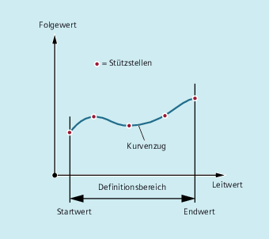

Eine Kurventabelle stellt ein Teileprogramm oder einen Teileprogrammabschnitt dar, welcher durch Voranstellen von CTABDEF und den abschließenden Befehl CTABEND gekennzeichnet ist.
Innerhalb dieses Teileprogrammabschnitts werden durch Bewegungsanweisungen einzelnen Positionen der Leitachse eindeutige Folgeachspositionen zugeordnet, die als Stützstellen für die Berechnung eines Kurvenzugs in Form eines Polynoms bis zu maximal 5. Grades dienen.
Für die Definition von Kurventabellen muss durch entsprechende MD-Projektierung Speicherplatz reserviert sein (→ Maschinenhersteller!).
| Beginn der Kurventabellendefinition | ||
| Ende der Kurventabellendefinition | ||
| Achse, deren Bewegung über die Kurventabelle berechnet werden soll | ||
| Achse, die die Leitwerte zur Berechnung der Folgeachsbewegung liefert | ||
| Nummer (ID) der Kurventabelle Die Nummer einer Kurventabelle ist eindeutig und unabhängig vom Speicherort. Es können keine Tabellen mit der gleichen Nummer im statischen und dynamischen NC-Speicher liegen. | ||
| Tabellenperiodizität | ||
| Tabelle ist nicht periodisch (wird nur einmal abgearbeitet, auch bei Rundachsen) | ||
| Tabelle ist periodisch bezüglich Leitachse | ||
| Tabelle ist periodisch bezüglich Leitachse und Folgeachse | ||
| Angabe des Speicherorts (optional) | ||
| Die Kurventabelle wird im statischen NC-Speicher angelegt. | ||
| Die Kurventabelle wird im dynamischen NC-Speicher angelegt. | ||
Hinweis: | |||
| Hinweis |
ÜberschreibenEine Kurventabelle wird überschrieben, sobald bei einer neuen Tabellendefinition deren Nummer ( |
Ein Programmabschnitt soll unverändert zur Definition einer Kurventabelle benutzt werden. Der darin auftretende Befehl zum Vorlaufstopp STOPRE kann stehen bleiben und wird sofort wieder aktiv, sobald der Programmabschnitt nicht mehr zur Tabellendefinition benutzt wird und CTABDEF und CTABEND entfernt wurden.
| Programmcode | Kommentar |
|---|---|
| … | |
| CTABDEF(Y,X,1,1) | ; Definition einer Kurventabelle. |
| … | |
| IF NOT ($P_CTABDEF) | |
| STOPRE | |
| ENDIF | |
| … | |
| CTABEND |
| Programmcode | Kommentar |
|---|---|
| N100 CTABDEF(Y,X,3,0) | ; Beginn der Definition einer nichtperiodischen Kurventabelle mit der Nummer 3. |
| N110 X0 Y0 | ; 1.Bewegungsanweisung, legt Startwerte und 1. Stützstelle fest:Leitwert: 0, Folgewert: 0 |
| N120 X20 Y0 | ; 2.Stützstelle:Leitwert: 0…20, Folgewert: Startwert…0 |
| N130 X100 Y6 | ; 3.Stützstelle:Leitwert: 20…100, Folgewert: 0…6 |
| N140 X150 Y6 | ; 4.Stützstelle:Leitwert: 100…150, Folgewert: 6…6 |
| N150 X180 Y0 | ; 5.Stützstelle:Leitwert: 150…180, Folgewert: 6…0 |
| N200 CTABEND | ; Ende der Definition. Die Kurventabelle wird in ihrer internen Darstellung als Polynom maximal 5.Grades erzeugt. Die Berechnung des Kurvenzugs mit den angegebenen Stützstellen ist abhängig von der modal gewählten Interpolationsart (Kreis-, Linear-, Spline-Interpolation). Der Teileprogrammzustand vor Beginn der Definition wird wiederhergestellt. |
Definition einer periodischen Kurventabelle mit Nummer 2, Leitwertbereich von 0 bis 360, Folgeachsbewegung von 0 nach 45 und zurück nach 0:
| Programmcode | Kommentar |
|---|---|
| N10 DEF REAL DEPPOS | |
| N20 DEF REAL GRADIENT | |
| N30 CTABDEF(Y,X,2,1) | ; Beginn der Definition. |
| N40 G1 X=0 Y=0 | |
| N50 POLY | |
| N60 PO[X]=(45.0) | |
| N70 PO[X]=(90.0) PO[Y]=(45.0,135.0,-90) | |
| N80 PO[X]=(270.0) | |
| N90 PO[X]=(315.0) PO[Y]=(0.0,-135.0,90) | |
| N100 PO[X]=(360.0) | |
| N110 CTABEND | ; Ende der Definition. |
| ;Test der Kurve durch Kopplung von Y an X: | |
| N120 G1 F1000 X0 | |
| N130 LEADON(Y,X,2) | |
| N140 X360 | |
| N150 X0 | |
| N160 LEADOF(Y,X) | |
| N170 DEPPOS=CTAB(75.0,2,GRADIENT) | ; Lesen der Tabellenfunktion beim Leitwert 75.0. |
| N180 G0 X75 Y=DEPPOS | ; Positionieren von Leit- und Folgeachse. |
| ;Nach Einschalten der Kopplung ist kein Synchronisieren der Folgeachse nötig. | |
| N190 LEADON(Y,X,2) | |
| N200 G1 X110 F1000 | |
| N210 LEADOF(Y,X) | |
| N220 M30 | |
Siehe auch:
Kurventabellen definieren (CTABDEF, CATBEND): Weitere Informationen
Kurventabellen: Funktion und Anwendung